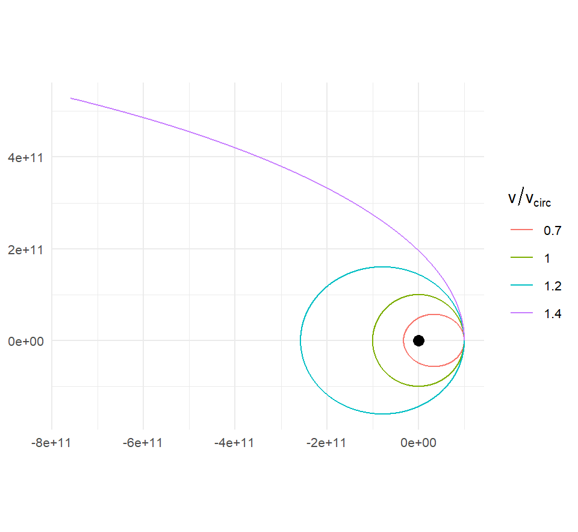

M <- 1e30
m <- 1e24
r0 <- 1e11
mu <- gravitational_constant * (M + m)
v_circ <- sqrt(mu / r0)
make_sim <- function(k, duration = seconds_per_year * 2) {
create_system() |>
add_body("Star", mass = M) |>
add_body("Planet", mass = m, x = r0, vy = k * v_circ) |>
simulate_system(time_step = seconds_per_hour, duration = duration) |>
mutate(k = k)
}
sweep <- bind_rows(lapply(c(0.7, 1.0, 1.2, 1.4), make_sim))4 The Two-Body Problem, Solved by Hand
The package documentation hands you a handful of formulas. The circular-orbit speed is \(\sqrt{GM/r}\); escape speed is \(\sqrt{2}\) times that; an orbit’s period is \(2\pi\sqrt{a^3/\mu}\); the distance from the parent at true anomaly \(\nu\) is \(a(1-e^2)/(1+e\cos\nu)\). Every one of them is true, and every one of them follows from Newton’s law in a few lines of vector algebra. This chapter does the algebra. It is the one place in the book where the derivations come first and the code comes second, and it will repay the effort: these are the formulas you will use to set up every system in Part III.
The strategy is the physicist’s standard one. First find the quantities that do not change as the bodies move, the conserved quantities. Then use them to pin down the shape of the orbit without ever integrating anything. Along the way, Kepler’s three laws drop out as consequences.
4.1 Two bodies become one
Take two point masses, \(m_1\) at \(\mathbf{r}_1\) and \(m_2\) at \(\mathbf{r}_2\), with nothing else in the universe. From Equation 3.3,
\[ \ddot{\mathbf{r}}_1 = G m_2 \frac{\mathbf{r}_2 - \mathbf{r}_1}{r^3}, \qquad \ddot{\mathbf{r}}_2 = G m_1 \frac{\mathbf{r}_1 - \mathbf{r}_2}{r^3}, \]
where \(r = |\mathbf{r}_2 - \mathbf{r}_1|\). Subtract the first from the second. Writing \(\mathbf{r} = \mathbf{r}_2 - \mathbf{r}_1\) for the relative position of body 2 as seen from body 1,
\[ \ddot{\mathbf{r}} = -\frac{\mu}{r^3}\,\mathbf{r}, \qquad \mu = G(m_1 + m_2). \tag{4.1}\]
Two coupled equations in six coordinates have become one equation in three. It says the relative position vector accelerates toward the origin as if there were a single fixed mass \(m_1 + m_2\) sitting there. The combination \(\mu = G(m_1+m_2)\) is called the gravitational parameter, and it is the only combination of \(G\) and the masses that the relative motion knows about.
What happened to the other three coordinates? Add \(m_1\) times the first equation to \(m_2\) times the second: the right-hand sides cancel, so the center of mass \(\mathbf{R} = (m_1\mathbf{r}_1 + m_2\mathbf{r}_2)/(m_1+m_2)\) has \(\ddot{\mathbf{R}} = 0\). It moves in a straight line at constant velocity, which is the drift we met in Chapter 2. Given \(\mathbf{R}\) and \(\mathbf{r}\), the individual positions are
\[ \mathbf{r}_1 = \mathbf{R} - \frac{m_2}{m_1+m_2}\,\mathbf{r}, \qquad \mathbf{r}_2 = \mathbf{R} + \frac{m_1}{m_1+m_2}\,\mathbf{r}. \tag{4.2}\]
Both bodies trace the same shape of orbit around the center of mass, scaled by the mass ratio. In Chapter 2’s fixed Earth-Moon system, Earth’s little circle had a radius \(m_{\mathrm{Moon}}/(m_{\mathrm{Earth}}+m_{\mathrm{Moon}}) \approx 1/82\) of the Moon’s.
When one body is much heavier, \(m_1 \gg m_2\), two things happen at once: \(\mu \approx G m_1\), and \(\mathbf{r}_1 \approx \mathbf{R}\), so the heavy body sits essentially at the center of mass and the light body orbits it. That is the “fixed central body” picture of the two-body vignette, and the approximation is excellent for the Sun and any planet (the Sun outweighs Jupiter a thousand to one) and merely good for Earth and the Moon, where the correction is 1.2%. From here on the derivation is exact for the relative motion; whether you then set \(\mu = GM\) or \(\mu = G(M+m)\) is a choice about how much precision you need.
4.2 Angular momentum is conserved, and the orbit is flat
Define the specific angular momentum (angular momentum per unit mass) of the relative motion,
\[ \mathbf{h} = \mathbf{r} \times \dot{\mathbf{r}}. \]
Differentiate it using the product rule:
\[ \dot{\mathbf{h}} = \dot{\mathbf{r}} \times \dot{\mathbf{r}} + \mathbf{r} \times \ddot{\mathbf{r}} = \mathbf{0} + \mathbf{r} \times \left(-\frac{\mu}{r^3}\mathbf{r}\right) = \mathbf{0}. \]
The first term is a vector crossed with itself and the second is \(\mathbf{r}\) crossed with a multiple of \(\mathbf{r}\); both vanish. So \(\mathbf{h}\) is a constant of the motion. This works for any force directed along \(\mathbf{r}\), not just inverse-square: it is a consequence of the force being central.
Two consequences follow immediately. Since \(\mathbf{h}\) is perpendicular to both \(\mathbf{r}\) and \(\dot{\mathbf{r}}\) at every instant, and \(\mathbf{h}\) never changes, the position and velocity are confined forever to the plane perpendicular to \(\mathbf{h}\). Every two-body orbit is planar. And the magnitude \(h = |\mathbf{r}\times\dot{\mathbf{r}}|\) is constant. In a small time \(dt\) the position vector sweeps out a thin triangle with sides \(\mathbf{r}\) and \(\dot{\mathbf{r}}\,dt\), whose area is half the magnitude of their cross product:
\[ \frac{dA}{dt} = \frac{1}{2}\,|\mathbf{r} \times \dot{\mathbf{r}}| = \frac{h}{2}. \tag{4.3}\]
The line from the central body to the orbiting one sweeps out equal areas in equal times. That is Kepler’s second law, and it took one line.
4.3 Energy is conserved
Now dot Equation 4.1 with the velocity:
\[ \dot{\mathbf{r}}\cdot\ddot{\mathbf{r}} = -\frac{\mu}{r^3}\,\mathbf{r}\cdot\dot{\mathbf{r}}. \]
The left side is \(\frac{d}{dt}\left(\tfrac12 \dot{\mathbf{r}}\cdot\dot{\mathbf{r}}\right) = \frac{d}{dt}\left(\tfrac12 v^2\right)\). For the right side, note that \(r^2 = \mathbf{r}\cdot\mathbf{r}\), so \(2r\dot{r} = 2\,\mathbf{r}\cdot\dot{\mathbf{r}}\) and \(\mathbf{r}\cdot\dot{\mathbf{r}} = r\dot{r}\). Then \(-\mu\,\mathbf{r}\cdot\dot{\mathbf{r}}/r^3 = -\mu\dot{r}/r^2 = \frac{d}{dt}(\mu/r)\). Moving everything to one side,
\[ \frac{d}{dt}\left(\frac{v^2}{2} - \frac{\mu}{r}\right) = 0, \qquad \varepsilon \equiv \frac{v^2}{2} - \frac{\mu}{r} = \text{const}. \tag{4.4}\]
\(\varepsilon\) is the specific orbital energy: kinetic energy per unit mass plus gravitational potential energy per unit mass. If \(\varepsilon < 0\) the body cannot reach \(r = \infty\) (it would need negative kinetic energy there), so it is bound. If \(\varepsilon \ge 0\) it can, and it escapes.
Chapter 12 turns both of these conservation laws into diagnostics: a simulation that lets \(\varepsilon\) or \(\mathbf{h}\) drift is a simulation with a problem.
4.4 The orbit equation
Here is the step that makes the whole chapter work. Conservation of \(\mathbf{h}\) and \(\varepsilon\) constrains the motion but does not by itself give the shape of the path. For the inverse-square force, and essentially only for it, there is a third conserved vector, and it hands you the orbit directly.
Start from the time derivative of \(\dot{\mathbf{r}}\times\mathbf{h}\). Since \(\mathbf{h}\) is constant,
\[ \frac{d}{dt}\left(\dot{\mathbf{r}}\times\mathbf{h}\right) = \ddot{\mathbf{r}}\times\mathbf{h} = -\frac{\mu}{r^3}\,\mathbf{r}\times(\mathbf{r}\times\dot{\mathbf{r}}). \]
Expand the triple product with the identity \(\mathbf{a}\times(\mathbf{b}\times\mathbf{c}) = \mathbf{b}(\mathbf{a}\cdot\mathbf{c}) - \mathbf{c}(\mathbf{a}\cdot\mathbf{b})\):
\[ \mathbf{r}\times(\mathbf{r}\times\dot{\mathbf{r}}) = \mathbf{r}\,(\mathbf{r}\cdot\dot{\mathbf{r}}) - \dot{\mathbf{r}}\,r^2 = \mathbf{r}\,r\dot{r} - \dot{\mathbf{r}}\,r^2, \]
so
\[ \frac{d}{dt}\left(\dot{\mathbf{r}}\times\mathbf{h}\right) = \mu\left(\frac{\dot{\mathbf{r}}}{r} - \frac{\dot{r}\,\mathbf{r}}{r^2}\right) = \mu\,\frac{d}{dt}\left(\frac{\mathbf{r}}{r}\right). \]
The last equality is just the quotient rule applied to \(\mathbf{r}/r\). Both sides are total time derivatives, so their difference is a constant vector. Divide by \(\mu\) and call the constant \(\mathbf{e}\):
\[ \mathbf{e} = \frac{\dot{\mathbf{r}}\times\mathbf{h}}{\mu} - \frac{\mathbf{r}}{r}. \tag{4.5}\]
This is the eccentricity vector (also called the Laplace-Runge-Lenz vector, in various normalizations). It lies in the orbital plane, because both terms do. To see what it means, take its dot product with \(\mathbf{r}\). The first term gives \(\mathbf{r}\cdot(\dot{\mathbf{r}}\times\mathbf{h})/\mu = \mathbf{h}\cdot(\mathbf{r}\times\dot{\mathbf{r}})/\mu = h^2/\mu\), using the cyclic property of the scalar triple product; the second gives \(-r\). If \(\nu\) is the angle between \(\mathbf{e}\) and \(\mathbf{r}\), the dot product is also \(e\,r\cos\nu\). So
\[ e\,r\cos\nu = \frac{h^2}{\mu} - r \quad\Longrightarrow\quad r = \frac{h^2/\mu}{1 + e\cos\nu}. \tag{4.6}\]
This is the orbit equation: the distance from the central body as a function of the angle \(\nu\) measured from the direction of \(\mathbf{e}\). The quantity \(p = h^2/\mu\) is called the semi-latus rectum, and \(e = |\mathbf{e}|\) is the eccentricity. The distance \(r\) is smallest when \(\cos\nu = 1\), so \(\mathbf{e}\) points toward the point of closest approach, the periapsis, and \(\nu\), the true anomaly, is the angle from periapsis. Equation 4.6 is a conic section with one focus at the origin:
| \(e\) | \(\varepsilon\) | shape | \(r_{\max}\) |
|---|---|---|---|
| \(0\) | \(-\mu^2/2h^2\) | circle | \(= r_{\min}\) |
| \(0 < e < 1\) | \(< 0\) | ellipse | finite |
| \(1\) | \(0\) | parabola | \(\infty\) |
| \(> 1\) | \(> 0\) | hyperbola | \(\infty\) |
Bound orbits are ellipses with the central body at a focus. That is Kepler’s first law, and it has now been derived from the inverse-square law, which is the thing Halley asked Newton about in 1684.
The relation between \(e\) and \(\varepsilon\) in the table comes from squaring Equation 4.5. Since \(\dot{\mathbf{r}} \perp \mathbf{h}\), \(|\dot{\mathbf{r}}\times\mathbf{h}| = vh\), and the cross term is \(-2\,\mathbf{r}\cdot(\dot{\mathbf{r}}\times\mathbf{h})/(\mu r) = -2h^2/(\mu r)\), so
\[ e^2 = \frac{v^2 h^2}{\mu^2} - \frac{2h^2}{\mu r} + 1 = 1 + \frac{2\varepsilon h^2}{\mu^2}. \tag{4.7}\]
Negative energy means \(e<1\): bound orbits are ellipses, as the table says.
4.5 The geometry of an ellipse
An ellipse has a longest diameter, the major axis, of length \(2a\); \(a\) is the semi-major axis. From Equation 4.6 the nearest and farthest points are at \(\nu = 0\) and \(\nu = \pi\):
\[ r_p = \frac{p}{1+e}, \qquad r_a = \frac{p}{1-e}, \qquad a = \frac{r_p + r_a}{2} = \frac{p}{1-e^2}. \]
So \(p = a(1-e^2)\), and the orbit equation takes the form the package uses:
\[ r = \frac{a(1-e^2)}{1+e\cos\nu}, \qquad r_p = a(1-e), \qquad r_a = a(1+e). \tag{4.8}\]
The semi-minor axis is \(b = a\sqrt{1-e^2}\). Two more facts fall out of these. First, given any two-body orbit, you can read off its eccentricity from its extreme distances alone:
\[ e = \frac{r_a - r_p}{r_a + r_p}. \tag{4.9}\]
Second, substituting \(h^2 = \mu p = \mu a(1-e^2)\) into Equation 4.7 and simplifying (try it; everything but one factor cancels) gives the energy in terms of the size of the orbit alone:
\[ \varepsilon = -\frac{\mu}{2a}. \tag{4.10}\]
The energy of an orbit depends only on its semi-major axis, not on its eccentricity. A circle of radius \(a\) and a needle-thin ellipse of semi-major axis \(a\) have the same energy.
4.6 Vis-viva, circular speed, and escape speed
Put Equation 4.10 into the definition of \(\varepsilon\) and solve for the speed:
\[ v^2 = \mu\left(\frac{2}{r} - \frac{1}{a}\right). \tag{4.11}\]
This is the vis-viva equation (Latin for “living force,” an old name for kinetic energy). It gives the speed at any distance \(r\) along an orbit of semi-major axis \(a\), and it is the formula you want whenever you know where a body is and need to know how fast it should be going.
Two special cases are the ones the documentation quotes. On a circular orbit, \(r = a\) always, so
\[ v_{\mathrm{circ}} = \sqrt{\frac{\mu}{r}}. \tag{4.12}\]
On a parabolic orbit, \(a \to \infty\) and the \(1/a\) term vanishes, so the speed that just barely escapes from distance \(r\) is
\[ v_{\mathrm{esc}} = \sqrt{\frac{2\mu}{r}} = \sqrt{2}\,v_{\mathrm{circ}}. \tag{4.13}\]
Now the rules of thumb in the two-body vignette can be made exact. Suppose you place a body at distance \(r\) from the central mass and launch it perpendicular to the radius at speed \(v = k\,v_{\mathrm{circ}}\). Then \(h = rv\), so \(p = h^2/\mu = r^2v^2/\mu = k^2 r\). The launch point has \(\dot{r} = 0\), so it is either periapsis or apoapsis, and Equation 4.6 gives \(r = p/(1\pm e)\), or
\[ e = \left|k^2 - 1\right|. \tag{4.14}\]
If \(k > 1\) the launch point is periapsis and the orbit swings outward; if \(k < 1\) it is apoapsis and the orbit dips inward; \(k = 1\) is a circle; \(k = \sqrt{2}\) gives \(e = 1\), a parabola. A planet launched at 1.2 times circular speed has \(e = 0.44\); at 1.4 times, \(e = 0.96\), a sliver away from escape. We will check both numbers in a moment.
4.7 Kepler’s third law
The area of an ellipse is \(\pi a b\). By Equation 4.3 the orbit sweeps area at the constant rate \(h/2\), so one full orbit takes \(T = 2\pi ab/h\). Substitute \(b = a\sqrt{1-e^2}\) and \(h = \sqrt{\mu a (1-e^2)}\):
\[ T = \frac{2\pi a^2\sqrt{1-e^2}}{\sqrt{\mu a(1-e^2)}} = 2\pi\sqrt{\frac{a^3}{\mu}}. \tag{4.15}\]
The eccentricity has cancelled: Kepler’s third law. The period depends on the semi-major axis and the total mass and on nothing else. Kepler’s own statement, that \(T^2/a^3\) is the same number for every planet, holds only because every planet’s mass is negligible next to the Sun’s, so \(\mu \approx GM_\odot\) for all of them. The correction for Jupiter is one part in a thousand in \(\mu\), half that in \(T\).
This is also the law that weighs things. Measure a moon’s period and orbital radius and Equation 4.15 gives you the mass of its planet; this is how the masses in Appendix D were obtained, and it is how we know the mass of the Sun, of Jupiter, and of the black hole at the center of the Milky Way.
4.8 Checking everything against the simulation
Time to see whether the package agrees with the algebra. The derivations above are exact for two bodies; the simulation is approximate; if they match, both the physics and the numerics are in good shape. To keep the comparison honest I will compute every prediction with the full \(\mu = G(M+m)\).
The speed sweep
Set up the vignette’s star and planet, and launch the planet at several multiples of circular speed:
sweep |>
filter(id == "Planet") |>
ggplot(aes(x, y, color = factor(k))) +
geom_path() +
annotate("point", x = 0, y = 0, size = 3) +
coord_equal() +
labs(x = NULL, y = NULL, color = expression(v / v[circ]))
Measuring eccentricity from a single state
Equation 4.5 is more than a derivation device. It gives the eccentricity from the position and velocity at any one instant, no full orbit required. Two helpers make that easy. The first extracts the relative motion of one body about another, the quantity all of this chapter’s formulas are about:
relative_state <- function(sim, body, center, G = gravitational_constant) {
ctr <- sim |>
filter(id == center) |>
select(time, m_c = mass, x_c = x, y_c = y, z_c = z,
vx_c = vx, vy_c = vy, vz_c = vz)
sim |>
filter(id == body) |>
inner_join(ctr, by = "time") |>
mutate(mu = G * (mass + m_c),
rx = x - x_c, ry = y - y_c, rz = z - z_c,
ux = vx - vx_c, uy = vy - vy_c, uz = vz - vz_c) |>
select(time, mu, rx, ry, rz, ux, uy, uz)
}The second computes \(\mathbf{h} = \mathbf{r}\times\mathbf{u}\) and then \(\mathbf{e} = (\mathbf{u}\times\mathbf{h})/\mu - \mathbf{r}/r\) component by component:
eccentricity <- function(sim, body, center, G = gravitational_constant) {
relative_state(sim, body, center, G) |>
mutate(r = sqrt(rx^2 + ry^2 + rz^2),
hx = ry * uz - rz * uy, # h = r x u
hy = rz * ux - rx * uz,
hz = rx * uy - ry * ux,
ex = (uy * hz - uz * hy) / mu - rx / r, # e = (u x h)/mu - r/r
ey = (uz * hx - ux * hz) / mu - ry / r,
ez = (ux * hy - uy * hx) / mu - rz / r,
e = sqrt(ex^2 + ey^2 + ez^2)) |>
select(time, e, ex, ey, ez)
}Now compare the prediction \(e = |k^2 - 1|\) with the eccentricity measured from the simulated state at the end of each run, two years of integration away from the initial conditions:
sweep |>
group_by(k) |>
group_modify(~ eccentricity(.x, "Planet", "Star") |>
filter(time == max(time))) |>
ungroup() |>
mutate(predicted = abs(k^2 - 1)) |>
select(k, predicted, measured = e)
#> # A tibble: 4 × 3
#> k predicted measured
#> <dbl> <dbl> <dbl>
#> 1 0.7 0.51 0.510
#> 2 1 0 0.000000413
#> 3 1.2 0.44 0.440
#> 4 1.4 0.96 0.960The agreement is to many decimal places. And since \(\mathbf{e}\) is supposed to be a constant of the motion, we can ask how constant the simulation kept it over the whole two years for the \(k = 1.2\) orbit:
e_track <- eccentricity(filter(sweep, k == 1.2), "Planet", "Star")
range(e_track$e)
#> [1] 0.4400000 0.4400002The spread between the smallest and largest value is the integrator’s error. It is small. Chapter 5 explains why it is small and what it depends on, and shows what the same test looks like with a worse integrator.
The package does this computation for you. get_orbital_elements() applies exactly the eccentricity-vector and vis-viva formulas of this chapter to every time step and returns the full set of orbital elements, with the semi-major axis and the Kepler’s-third-law period alongside the eccentricity:
get_orbital_elements(filter(sweep, k == 1.2), "Planet", "Star",
mu = gravitational_constant * (M + m)) |>
summarise(e = mean(e), a = mean(a), period_days = mean(period) / seconds_per_day)
#> # A tibble: 1 × 3
#> e a period_days
#> <dbl> <dbl> <dbl>
#> 1 0.440 178571465973. 672.(The mu argument is there because, by default, the function uses the parent’s mass alone, which is the convention of add_body_keplerian() and is exact in the test-particle limit; passing \(G(M+m)\) gives the exact two-body elements, which is what the derivations here are about.) I wrote eccentricity() out by hand above so that you could see the formula do its work; from here on the book uses the package function, and Chapter 7 derives the rest of what it computes.
Measuring the period
Kepler’s third law needs a period. get_orbital_elements() reports one, but it is computed from the third law, \(T = 2\pi\sqrt{a^3/\mu}\), so using it to check the third law would be circular. An independent measurement means finding when the body has actually gone all the way round. The cleanest way is to track the polar angle of the relative position, unwrap the jump from \(+\pi\) to \(-\pi\), and interpolate to the moment the total angle reaches \(2\pi\):
measure_period <- function(sim, body, center = NULL, G = gravitational_constant) {
if (is.null(center)) { # measure about the origin
rel <- sim |> filter(id == body) |> transmute(time, rx = x, ry = y)
} else {
rel <- relative_state(sim, body, center, G)
}
theta <- atan2(rel$ry, rel$rx)
dtheta <- ((diff(theta) + pi) %% (2 * pi)) - pi # unwrap the jump at +/- pi
swept <- abs(cumsum(c(0, dtheta))) # total angle travelled
i <- which(swept >= 2 * pi)[1]
if (is.na(i)) return(NA_real_) # the run was too short
f <- (2 * pi - swept[i - 1]) / (swept[i] - swept[i - 1])
rel$time[i - 1] + f * (rel$time[i] - rel$time[i - 1])
}For the circular case, Equation 4.15 with \(a = r_0\):
T_pred <- 2 * pi * sqrt(r0^3 / mu)
T_meas <- measure_period(filter(sweep, k == 1), "Planet", "Star")
c(predicted_days = T_pred / seconds_per_day,
measured_days = T_meas / seconds_per_day)
#> predicted_days measured_days
#> 281.4900 281.4901For the \(k = 1.2\) ellipse the semi-major axis is \(a = r_p/(1-e)\) with \(r_p = r_0\) and \(e = 0.44\), which makes the orbit larger and the period longer:
a_12 <- r0 / (1 - 0.44)
T_pred <- 2 * pi * sqrt(a_12^3 / mu)
T_meas <- measure_period(filter(sweep, k == 1.2), "Planet", "Star")
c(predicted_days = T_pred / seconds_per_day,
measured_days = T_meas / seconds_per_day)
#> predicted_days measured_days
#> 671.7088 671.7090The Moon, revisited
Chapter 2’s four-line Moon started at the semi-major-axis distance of 384,400 km with the mean orbital speed of 1,022 m/s. We can now say exactly what orbit that is. The circular speed at that distance, with the full \(\mu = G(M_{\mathrm{Earth}} + m_{\mathrm{Moon}})\), is a little higher than 1,022 m/s, so the launch point is apoapsis and the orbit dips inward:
mu_em <- gravitational_constant * (mass_earth + mass_moon)
k_moon <- speed_moon / sqrt(mu_em / distance_earth_moon)
e_moon <- abs(k_moon^2 - 1)
a_moon <- distance_earth_moon / (1 + e_moon) # launch point is apoapsis
T_moon <- 2 * pi * sqrt(a_moon^3 / mu_em)
c(k = k_moon, e = e_moon, a_km = a_moon / 1e3, T_days = T_moon / seconds_per_day)
#> k e a_km T_days
#> 9.975312e-01 4.931523e-03 3.825136e+05 2.708447e+01Against the simulation:
moon <- create_system() |>
add_body("Earth", mass = mass_earth) |>
add_body("Moon", mass = mass_moon, x = distance_earth_moon, vy = speed_moon) |>
simulate_system(time_step = seconds_per_hour, duration = seconds_per_day * 28)
measure_period(moon, "Moon", "Earth") / seconds_per_day
#> [1] 27.08531The simulation and the formula agree. But the real Moon’s sidereal period is 27.32 days, and the four-line Moon’s is about 27.1. The simulation is not wrong; the setup describes a slightly different orbit from the real one. “Semi-major axis” and “mean speed” are two properties of the real elliptical orbit, but using one as a starting distance and the other as a starting speed does not reproduce that ellipse; it produces a nearby one with a smaller \(a\) and hence a shorter period. The right way to put a body on its real orbit is to specify the orbit itself, by its orbital elements, and let the package compute a consistent position and velocity. That is what add_planet() does and what Chapter 7 derives.
Exercises
Exercise 4.1 Carry out the algebra from Equation 4.7 to Equation 4.10: substitute \(h^2 = \mu a (1-e^2)\) and solve for \(\varepsilon\). Where did the assumption \(e \ne 1\) get used?
Exercise 4.2 Launch the planet in make_sim() at \(k = 0.99\sqrt{2}\), \(k = \sqrt{2}\), and \(k = 1.1\sqrt{2}\) for two years. Compute the specific energy \(\varepsilon\) from the simulated state at every time step and plot it against time for all three. What sign does each have, and is it constant?
Exercise 4.3 Mars has \(a = 2.279\times10^{11}\) m and \(e = 0.0934\). Use vis-viva to compute its speed at perihelion and at aphelion. Then build Mars with add_planet("Mars", parent = "Sun") (which starts it at perihelion), simulate for one Mars year, and compare the maximum and minimum speeds in the output with your numbers.
Exercise 4.4 Io orbits Jupiter with a period of 1.769 days at a mean distance of 421,800 km. Use Kepler’s third law to compute Jupiter’s mass and compare with mass_jupiter. Then simulate Io on a circular orbit using your computed mass and check that measure_period() returns 1.769 days.
Exercise 4.5 For the \(k = 1.2\) run, print the components of \(\mathbf{e}\) at \(t = 0\). In which direction does it point, and why is that the direction you should expect given where the planet was launched?